#Divergency: Dark Fantasy Tactical Brawler
A fast 2.5D pixel-art brawler where every fight is shaped by your fighter, your skill deck, and your squad commands.
Pick a fighter. Build a 4-skill loadout. Command your allies while you dash, parry, cancel, juggle, and break enemy formations in real time.
Divergency is built around the feeling of being fast, heavy, and in control. It takes the readable chaos of classic side-scrolling brawlers and adds tactical decisions before and during every mission: which fighter you bring, which skills you equip, where your allies stand, and when you call them in for synchronized assists.
Combat is the hook. The campaign gives those fights a world, routes, bosses, and consequences, but the core promise is simple: a pixel-art brawler where your hands stay busy and your decisions actually matter.
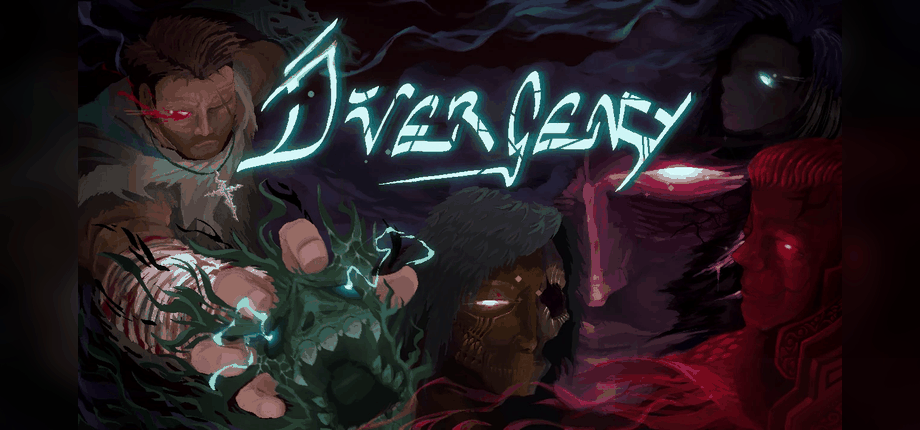
Divergency is built for players who love classic side-scrolling action refined with modern responsiveness, satisfying traversal, and tactical depth.
- High-Velocity Combat & Satisfying Movement: Fast-paced, fluid 2D/2.5D brawling featuring highly responsive dashes, animation cancels, parries, and tight mechanical control.
- Dynamic Playable Cast: Five core fighters, each with their own weapons, weight, movement rhythm, and mechanical feel.
- Deck-Based Skill Loadouts: Customize your approach before every mission. Select and carry only 4 active skills from a pool of over 10 unique abilities per fighter.
- Real-Time Tactical Command: Direct your allies seamlessly in the heat of battle. Switch formations and call synchronized assist attacks to shatter enemy lines.
- Handcrafted Pixel-Art World: Explore branching stages with hidden routes, environmental puzzle sections, and secret lore encounters.
- A Dark Fantasy Narrative: A gripping campaign about grief, survival, relic fragments, and the heavy price of turning human beings into weapons.
The goal is not to make a simple arena brawler. Divergency is a complete, satisfying adventure campaign centered around combat mastery, party synergy, and a world that shifts as each relic fragment is revealed.
Divergency is inspired by games that made 2D action feel fast, readable, chaotic, and character-driven. These references explain the combat feeling, not the final art direction or story identity. Divergency has its own dark fantasy world, relic-fragment campaign, and party command systems.
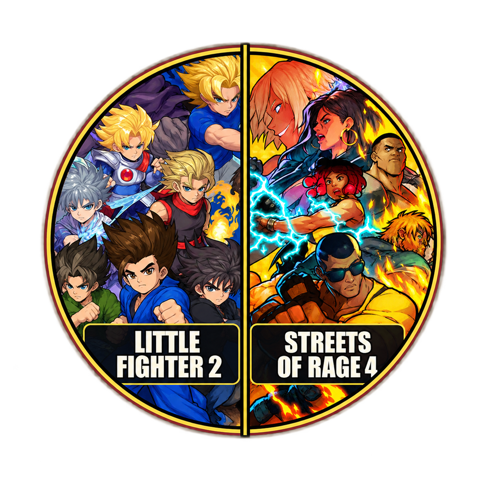
The wheel highlights two references: Little Fighter 2 and Streets of Rage 4. Classic arcade brawlers guide the 2.5D lane pressure, enemy waves, and stage pacing, while modern brawlers and action RPGs guide replayability, character identity, and loadout depth.
#High-Velocity, Responsive Combat
Combat in Divergency is defined by its speed, impact, and mechanical responsiveness. We want every strike, dash, and block to feel incredibly satisfying.
- Fluid Traversal & Movement: Dash through lane pressure, cancel your attack animations to escape danger, and execute quick parries to turn the tide. Movement is not just a way to walk between fights—it is your primary survival tool, allowing for high-skill combat expressions.
- Dynamic Physics & Hit-Stop: Every weapon impact features tailored visual hit-stop, camera shake, and screen-space particle effects that give combat a heavy, physical punch.
- Encounter Pressure: You don't just fight passive targets. Enemy groups act in formations. Soldiers, shield bearers, ranged shooters, and brutal bosses force you to constantly reposition, break formations, and adapt your rhythm.
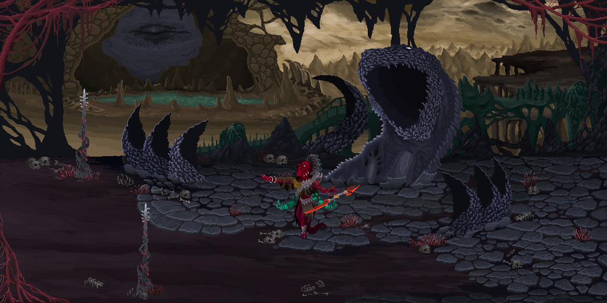
#Deck-Based Combat Attunement (Loadouts)
In Divergency, combat is about preparation as much as reflexes. Each fighter has access to an expansive pool of over 10 unique active skills, but you cannot bring them all. Before setting foot in a stage, you customize your combat deck by selecting only 4 active skills for the mission ahead.
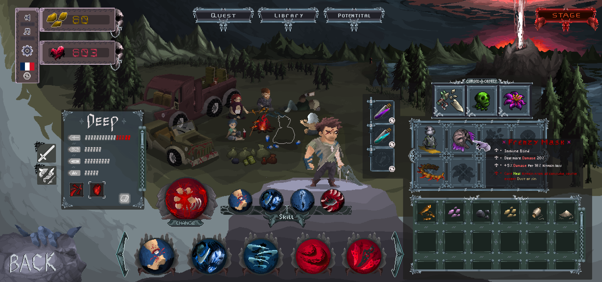
This limit changes how you approach each route:
- Crowd Control Attunement: Equip wide-sweeping attacks, area pressure, and stun tools for dense enemy waves.
- High Mobility Attunement: Bring dashes, air control, and traversal tools for hazard-heavy sections.
- Guard-Breaking Attunement: Slot heavy impacts and shield-shattering strikes against defensive front lines.
- Burst Damage Attunement: Pack high-damage finishers when preparing for major boss encounters.
The attunement system is designed to create tactical preparation without slowing down the action. You analyze the map, select your loadout, and immediately feel the weight of your choices in battle.
Skills are not static. As fighters level up, skill upgrades can improve damage, cooldown behavior, stamina or energy cost, and secondary effects.
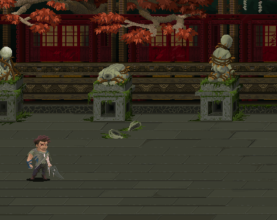
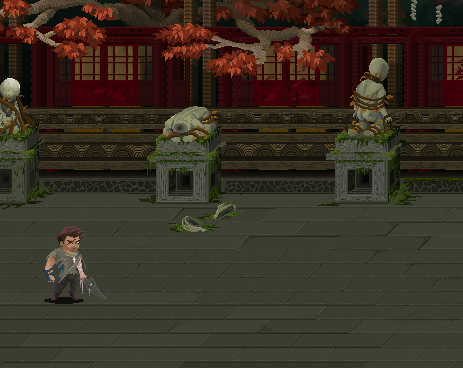
#Real-Time Tactical Command (Squad Synergy)
You are not fighting this war alone. Divergency features a seamless, real-time player-to-AI command wheel that lets you orchestrate your squad without stopping the brawler action.
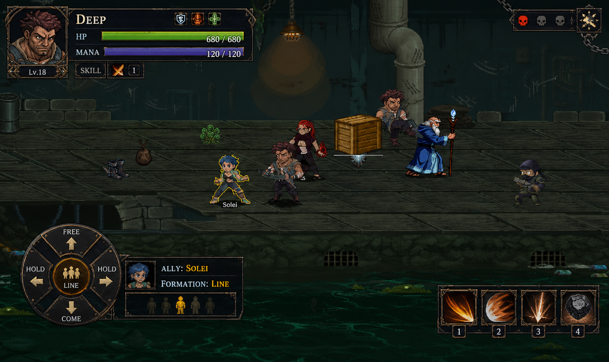
Quickly select a nearby ally (General) while holding Shift (cycling with Tab) to command your squad in real-time:
- 4-Direction Command Wheel: Free (Up - release to independent AI), Come (Down - regroup behind player), Hold Left / Hold Right (anchor and defend flanks).
- Formations (Shift + 1 / 2 / 3): Line (1) for broad lane control, Wedge (2) for armor-piercing assaults, Circle (3) for 360° perimeter defense.
- Direct NPC Action (Shift + D / J / A): Direct immediate response—Defense (D) to guard/shield, Jump (J) for mobility/air evasions, Attack (A) for frontal strikes.
- Signature Skill Combos (Shift + D + Up/Down + J/A): Channel classic Little Fighter 2 inputs (Defense + Directions + Attack/Jump) to command allies to unleash powerful aerial launchers, armor-shredding sweeps, and shockwaves.
While you brawl in real-time, the command system adds a satisfying layer of tactician control—pulling allies out of danger zones, locking down choke points, or calling in synchronized strikes exactly when a boss reveals a weak spot.
#Playable Fighters
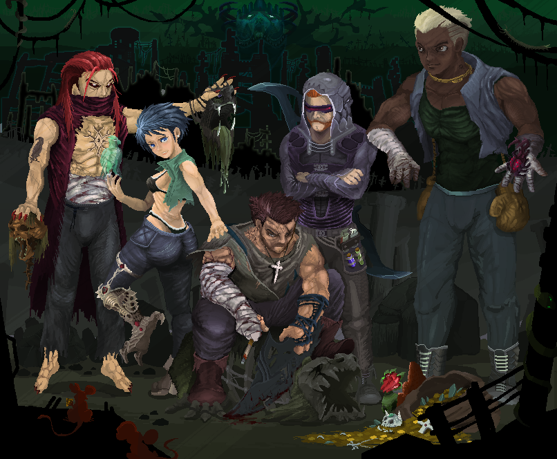
#Deep — The War-Tired Crusader
"I've fought in enough wars to know symbols don't bleed. People do."
Deep is a heavy melee fighter and former crusader who has survived too many wars. He hits hard, controls space, and carries the weight of a man who no longer wants to be used as a symbol.
- Combat Style: Frontline Juggernaut / Crowd Control
- Signature Weapon: Relic-Iron Greatsword
- Movement Mechanic: [Developer Note: Replace this placeholder with your character details file data] (e.g., Heavy charge, ground slam cancels)
- Squad Synergy: Absorbs frontline pressure, breaks shield formations, and peels enemies off vulnerable teammates.

#Solei — The Swift Runner
"I'm still young. I still doubt. But when I run, I know exactly who I am."
Solei is young, fast, and confident when she moves, even when she still doubts herself. She is built for speed, pressure, and quick reads, trusting her movement before she trusts her certainty.
- Combat Style: High-Speed Duelist / Combo Specialist
- Signature Weapon: Twin Steel Kunai
- Movement Mechanic: [Developer Note: Replace this placeholder with your character details file data] (e.g., Dash cancels, multi-directional air dashes)
- Squad Synergy: High single-target DPS, executes high-priority targets, and moves swiftly across lanes to assist allies in distress.
#Mark — The Tactical Scout
"Knowing where the enemy will be tomorrow is worth more than a thousand soldiers today."
Mark is a tactical veteran who works from the shadows. He reads the battlefield, gathers information, and supports the team when brute force is not enough.
- Combat Style: Ranged Support / Battlefield Disruption
- Signature Weapon: Silent Crossbow & Smoke Bombs
- Movement Mechanic: [Developer Note: Replace this placeholder with your character details file data] (e.g., Tactical slide, smoke evasions)
- Squad Synergy: Blinds enemies, slows down crowd movements, and provides cover so teammates can regroup.
#Tulas — The Blood Channeler
"Every miracle has a price. Some choose to pay in steel; others, in blood."
Tulas is a blood and liquid mage. His abilities can create shields, platforms, filters, temporary paths, and dangerous offensive tools, but his power always carries a moral cost.
- Combat Style: Area Denial / Platform Conjurer
- Signature Weapon: Liquid Catalyst Core
- Movement Mechanic: [Developer Note: Replace this placeholder with your character details file data] (e.g., Blood platform creation for lane elevation)
- Squad Synergy: Creates defensive barriers and vertical paths, controlling the flow of the battlefield and shielding allies from harm.
#Block — The Young Guardian
"Call me boy or call me man. I'll stand on my own two feet and fight with my fists."
Block is a loyal young ally and defensive force. Saving him is one of the first campaign objectives, and his role reinforces the game's focus on trust, courage, party pressure, and commandable teamwork.
- Combat Style: Pure Defensive Tank
- Signature Weapon: Tower Aegis Shield
- Movement Mechanic: [Developer Note: Replace this placeholder with your character details file data] (e.g., Stationary block parry, heavy shield bash)
- Squad Synergy: Absorbs maximum damage, draws enemy aggro, and creates temporary invulnerability zones for the party.
#Ghost — The Nameless Survivor
"My record is blank. My future is mine to write."
Ghost begins as a nameless survivor pulled out of Jamerson's prison. The system cannot fully identify him, and that failure may be the reason the relic fragments cannot control him like everyone else.
- Combat Style: Unpredictable Skirmisher / Phase Duelist
- Signature Weapon: Fragmented Phase Blade
- Movement Mechanic: [Developer Note: Replace this placeholder with your character details file data] (e.g., Glitch phase-dash, teleport cancels)
- Squad Synergy: Bypasses enemy guards completely, creates temporal decoys, and disrupts boss spell-casting.
#Enemies & Bosses
Over 50+ enemies, each designed and animated by hand to demand a different strategy.
Human foes fight intelligently — shields protect gunners, ambushers flank, and no one fights to die.

Demons fight relentlessly — for death means nothing to them.

Bosses range from twisted mortals to nightmarish entities born from the Calamity itself.
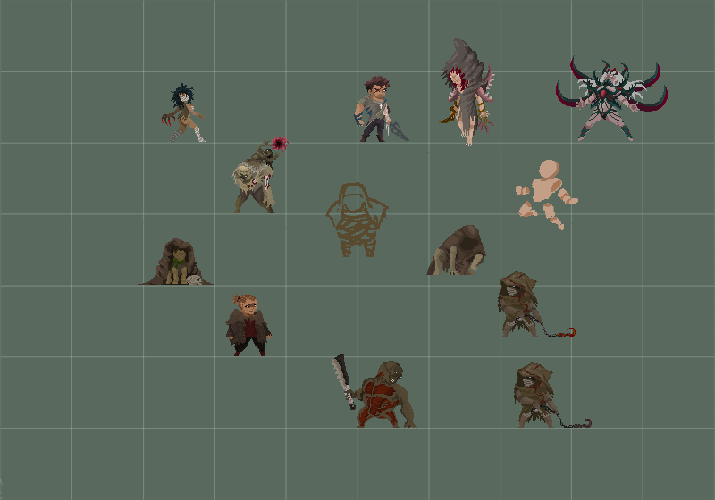
Every miracle in Divergency leaves a wound.
Long ago, people killed a newborn creature from beyond their world, remembered as the Infant God. Its body was divided into five living relics: the Eye, Ear, Tongue, Heart, and Umbilical Cord. Each grants power, feeds on human desire, and seeks the others. Their survival is tied to recurring Calamities of disease and curses.
Deep, a former crusader, chose the rebuilt Marseille Autonomous Metropolis to raise his adopted niece Solei away from war. But behind its bright harbor and guarded streets, former officer Jamerson Obsworth uses refugees and prisoners as test subjects. He holds the Eye and believes it can awaken his infected daughter, Heniana, from cryogenic sleep.
When Block is captured while investigating the disappearances, Deep's team breaks into Bastonne Prison. They rescue Block, free Ghost--a nameless prisoner resistant to its drugs--and steal records proving that Jamerson is hunting the other relics. He believes their combined power can awaken Heniana.
That prison break is where the adventure begins. Branded as fugitives with nowhere safe left in Marseille, Deep's team follows Jamerson's trail across fractured lands. Each region holds another relic and another faction trying to use it. The team must reach the fragments first, uncover why the Calamities keep returning, and stop Jamerson from giving the Infant God a path back into the world.
#The Full Campaign
Divergency is planned as a five-stage story campaign, with each major stage built around a relic fragment and a different way people justify cruelty.
| Stage | Region | Focus |
|---|---|---|
| Stage 1 | Marseille | Prison escape, undercity routes, gangs, secret police, research submarine |
| Stage 2 | Sakuri | Sacred paths, hidden doors, identity, family, and the fragment called The Ear |
| Stage 3 | Calvaria | Grave-city, old wars, false comfort, and the voices of the dead |
| Stage 4 | Akam Meskul | Cursed mountain war zone, body horror, loyalty, and survival |
The core story is about refusing the easy lie that love, grief, faith, history, or survival can make sacrifice clean.
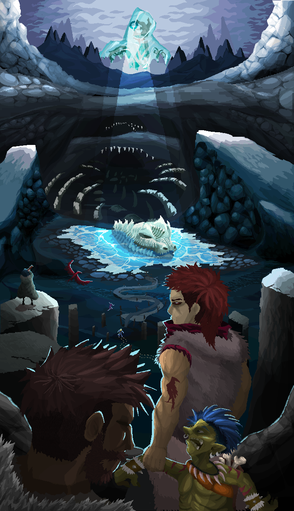
Divergency's world is built to feel dangerous, beautiful, and lived in. Its pixel art blends ruined industry, sacred landscapes, grotesque experiments, cursed wilderness, and hand-animated fighters into a dark fantasy campaign where every region has its own visual language.
Marseille's bright surface hides prisons, gangs, undercity routes, and forbidden laboratories. Sakuri's calm paths and sacred bridges conceal old manipulation. Later chapters move into grave-cities, cursed mountain war zones, and the dreamlike final space known as The Cradle, where grief, memory, and violence become physical places.
The stages are not just backdrops for arena fights. They include hidden routes, environmental details, puzzle moments, optional secrets, and quieter story beats between combat encounters. Exploration gives the world room to breathe, while each new region changes how battles feel and how the party moves through danger.
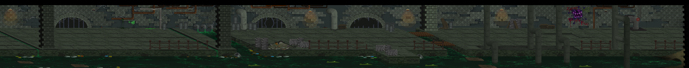
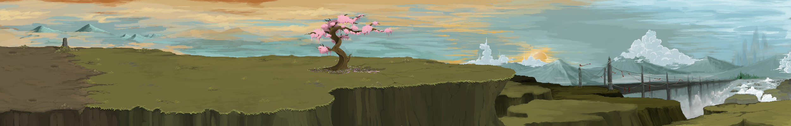
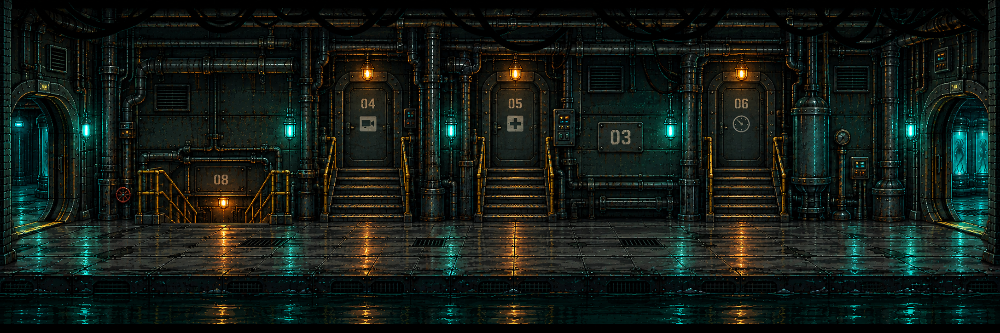
Each chapter has its own combat identity. Marseille emphasizes tight industrial spaces, prison escapes, gang pressure, and the research submarine. Sakuri shifts toward sacred routes, hidden doors, identity, and corruption. Calvaria, Akam Meskul, and The Cradle push the campaign into stranger territory, changing the atmosphere, enemy pressure, and route design as the story moves closer to the relics.

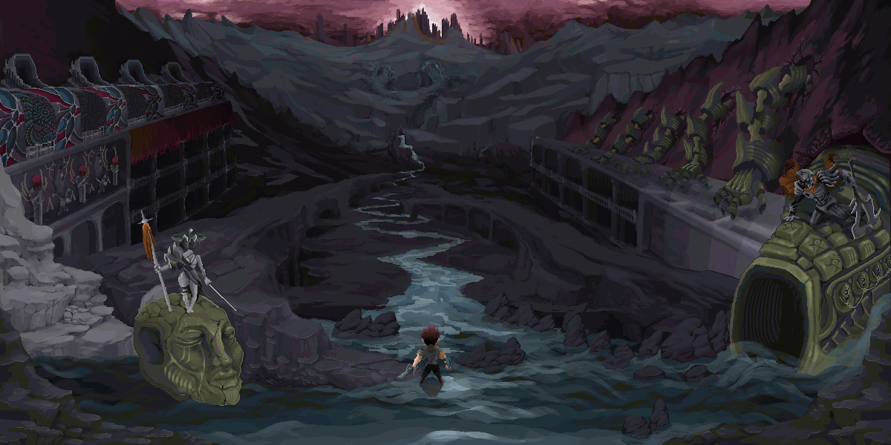
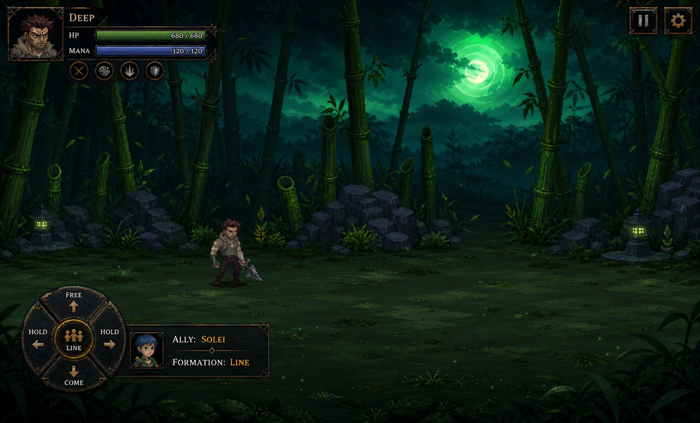
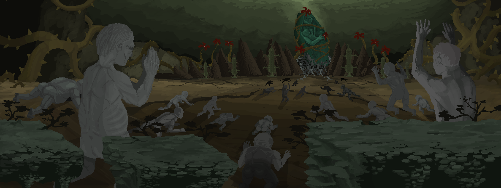
#Current Development Status
Divergency is in active development from a playable build.
Already built or in progress:
- Five core playable characters, with Ghost planned as a special story fighter.
- Core 2D/2.5D movement and beat 'em up combat.
- Skill loadout structure and mission selection UI direction.
- Player-to-AI squad command prototype.
- Enemy behavior, encounter logic, and boss encounter tests.
- Marseille sewer, undercity, laboratory, and industrial environment art.
- Stage 1 story structure covering Bastonne, Armorlite, Laundel, the port ambush, and the research submarine.
- Full campaign outline for Sakuri, Calvaria, Akam Meskul, and The Cradle.
- Combat HUD, command controls, skill selection, and character selection UI direction.
Still to finish:
- Combat polish, hit timing, balancing, and boss tuning.
- Final UI art, menu flow, and release-ready presentation.
- Full stage implementation across the campaign.
- Final music, sound effects, VFX polish, localization pass, and QA.
- Stretch-goal features, only if those goals are reached and testing supports them.
#Why Kickstarter?
Divergency is being built by a small independent team. Kickstarter support lets us keep the full story campaign as the priority and pay for the production work that turns the current playable build into a finished PC-first release.
This campaign is completion funding for the full story campaign foundation. It does not mean every stretch feature is guaranteed at launch. Extra modes stay separated as stretch goals so the main campaign remains protected.
#Funding Goal: $20,000 - Full Story Campaign Foundation
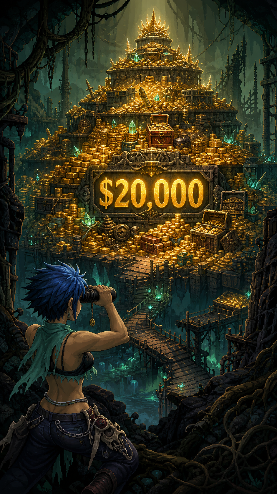
Budget breakdown:
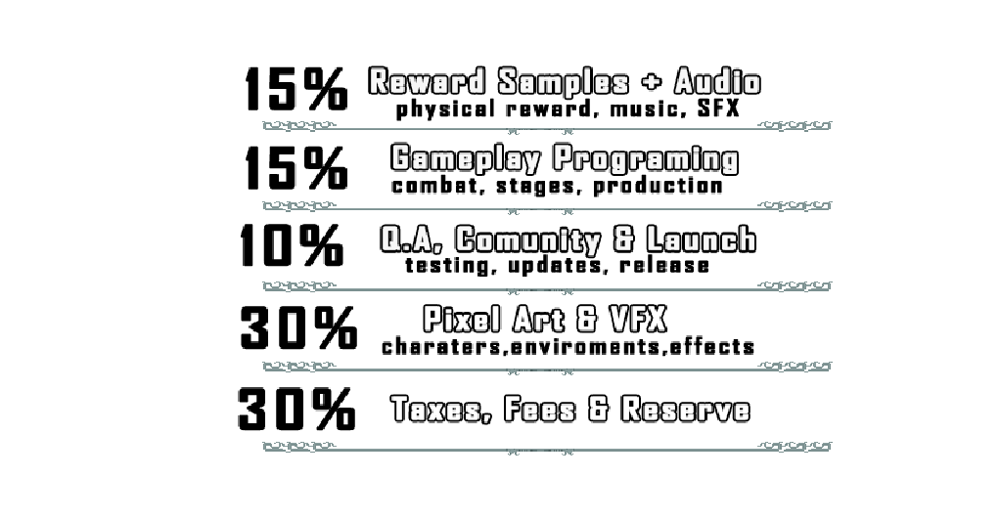
This draft uses a cautious fee and tax reserve because French micro-entreprise rates, VAT thresholds, and income-tax treatment depend on the final activity classification, year, and campaign total. The final public page should be checked against an accountant or official guidance before launch.
The roadmap starts with the protected $20,000 base goal. Everything above that is extra production scope. If a stretch feature threatens the main story release, the base campaign stays first and backers receive a clear production update.
| Goal | Unlock | What it adds |
|---|---|---|
| $20,000 | Full Story Campaign Foundation | Main campaign production, core combat, real-time squad commands, boss fights, QA, PC release, and digital delivery. |
| $30,000 | The Arsenal: Skills, Items & Character Voices | Additional skill upgrades, new in-game items/relic pickups, expanded item art, and scoped character voice lines for combat barks and key story moments. |
| $40,000 | Whispers of the Dead: Lore & Secrets | Hidden routes, character backstory events, secret rooms, and optional lore mini-boss encounters. |
| $50,000 | Covenant of Two: LAN Network Co-op | 2-player co-op over LAN/direct-IP network sessions, with separate screens, host/join UI, team-combo commands, and sync testing. |
| $60,000 | Survival Modes & Boss Rush | Replay-focused combat modes, boss-rush structure, and expanded combat SFX polish. |
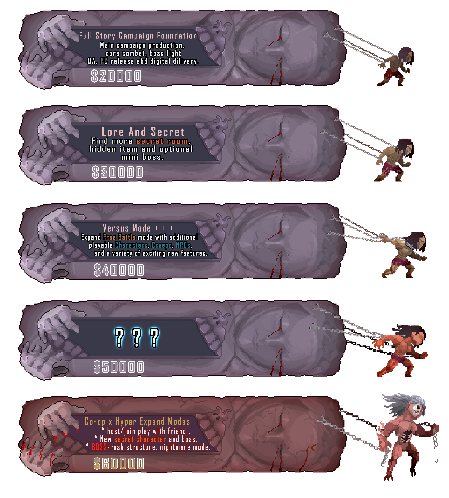
#Production Timeline
| Window | Milestone |
|---|---|
| Month 1-3 | Combat polish pass, clean gameplay capture, UI direction lock, production tools |
| Month 4-6 | Stage 1 vertical slice: Bastonne, Marseille route flow, enemies, and first boss structure |
| Month 7-10 | Stage 1 content build: Armorlite, Laundel, port ambush, submarine laboratory, and major experiment boss |
| Month 11-14 | Stage 2 Sakuri and Stage 3 Calvaria content pass, relic mechanics, bosses, and story events |
| Month 19-21 | Full campaign alpha/beta: balancing, bug fixing, boss tuning, and backer feedback |
| Month 24-26 | Legacy physical-production window; use the August 2027 target and shipping notes below for the revised merchandise proposal |
Backer-facing progress checkpoints are planned around visible milestones: combat polish footage, Stage 1 vertical-slice capture, stage-content updates, alpha/beta access for eligible tiers, and release-candidate updates.
Dates may shift if testing shows that a feature needs more work. If that happens, backers will receive clear updates explaining what changed, what is being fixed, and how it affects delivery.
#Risks And Challenges
Divergency is an ambitious action game made by a small team. The main risks are schedule, scope, technical stability, and fulfillment.
#Development Delays
Combat-heavy games need iteration. Animation timing, hitboxes, enemy behavior, UI clarity, and difficulty balance can all take longer than expected. To reduce risk, the base goal focuses on the main story campaign first.
#Scope Control
The full world of Divergency has room for more modes, side content, and playable variations than a small team should promise all at once. Stretch goals are separated from the base campaign so the core release stays protected.
#Co-op And Online Features
Co-op in this stretch goal means LAN/direct-IP network play, not shared-screen couch co-op. That makes the feature heavier than same-screen play: it needs host/join flow, connection handling, gameplay-state synchronization, latency tolerance, save/session rules, co-op UI, and dedicated testing. Public matchmaking, relay-server infrastructure, PvP, and broader online-service features are not launch promises in this campaign draft. If they are explored later, they will be treated as separate technical work after the base game is stable.
#Platform And Release Approvals
The current release plan is PC-first. Any additional platform can require technical checks, store page review, certification, or extra porting work. Additional platforms will be considered after the base experience is stable.
#Communication
If the project hits delays or roadblocks, we will post clear updates explaining what happened, what is being fixed, and how it affects the schedule.
Divergency is for players who remember the joy of side-scrolling action, the tension of mastering a fighter, and the satisfaction of leading a small party through dangerous spaces.
Your support helps us finish the full story campaign, sharpen the combat, complete the world beyond Marseille, and bring Divergency's dark fantasy brawler to release.
Back Divergency and help us build a new 2D action game with skill loadouts, ally commands, handcrafted stages, and a story about refusing to sacrifice people for someone else's miracle.
Follow and support Divergency: